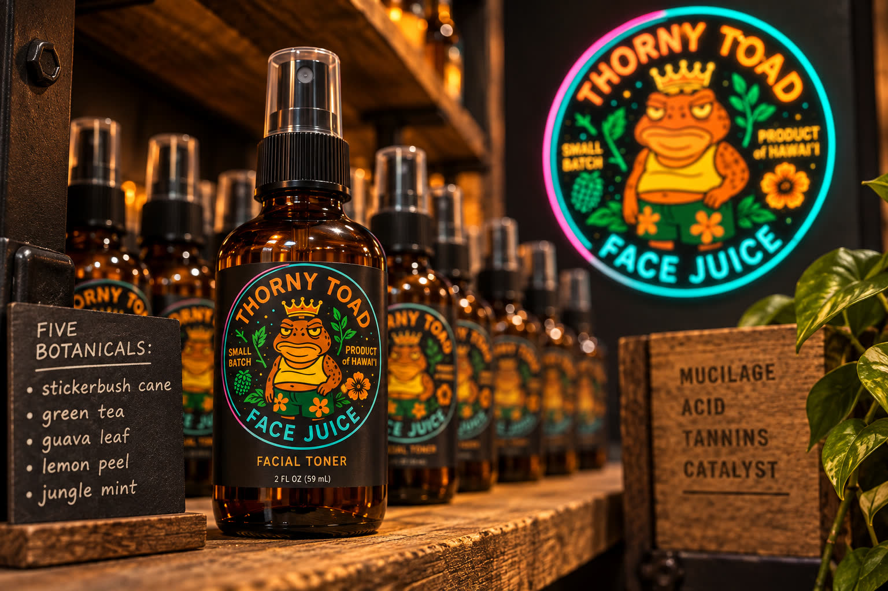
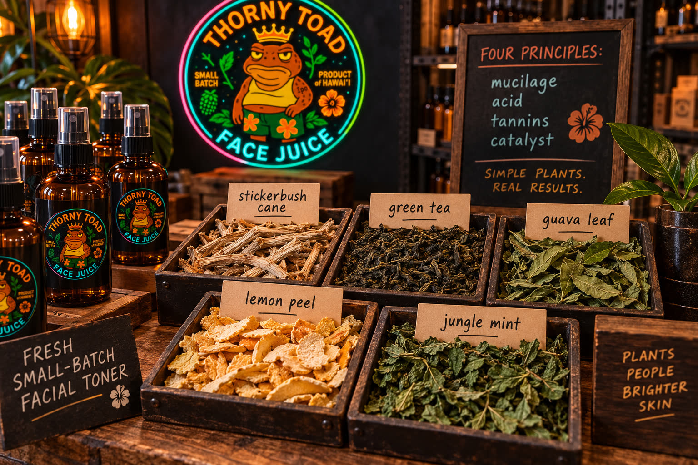
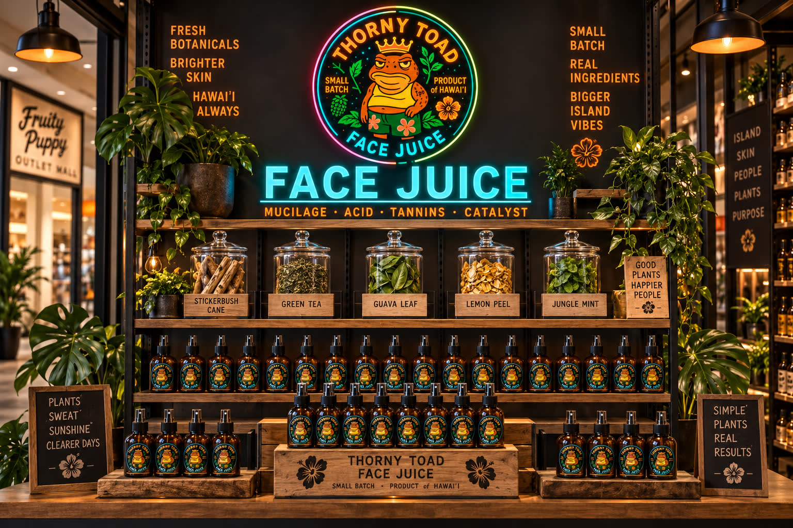
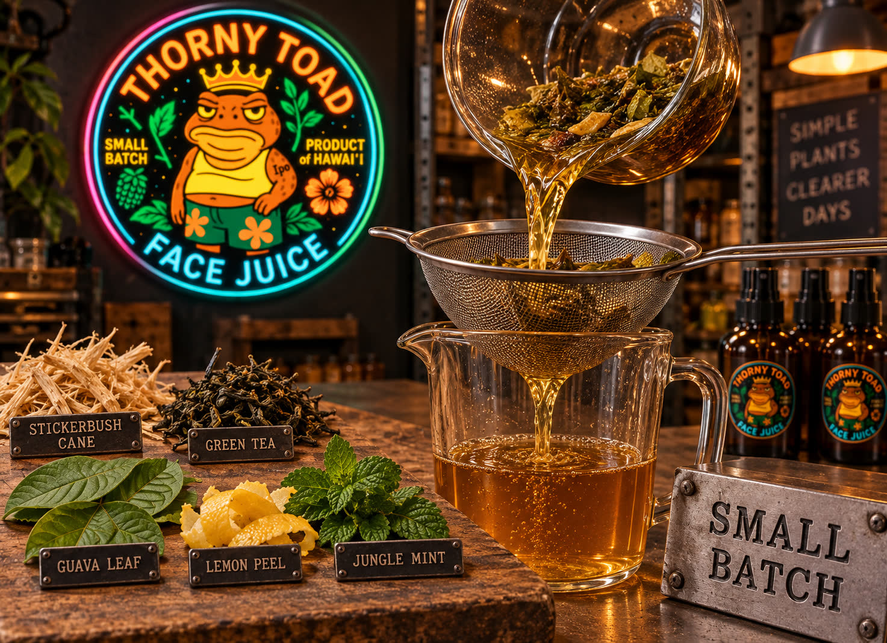

Unit · Fruity Puppy Outlet Mall
Face Juice — small-batch Hawaiʻi botanical facial toner. Stickerbush cane, green tea, guava leaf, lemon peel, jungle mint. Neon toad energy. Handmade, not AI-slop.
Step insideInside
Neon on black wood. Amber bottles on the shelves. Mucilage · Acid · Tannins · Catalyst. Simple plants. Real results.

Amber glass, black spray, circular toad label. Small batch · Product of Hawaiʻi. Mucilage, acid, tannins, catalyst — four principles on the block next to the bottle.

No aloe filler. Fresh small-batch facial toner — plants, people, brighter skin.

Jars of the five plants on the middle shelf. Crates stamped Thorny Toad Face Juice — Small Batch · Product of Hawaiʻi. Pendant lamps, monstera, cyan neon.
Same plants. A brighter you.

Pour day in the warehouse lab. Honey-amber liquid through the mesh. Stickerbush, tea, guava, lemon, mint on the board — labeled, not guessed.
Shopkeeper hello from the Face Juice crew — auntie with the spray bottle, Rooster Island energy. Hit play; there's audio. Ambient bed pauses while this plays.
Thorny Toad Toner Warehouse · Face Juice · Small batch · Product of Hawaiʻi · Simple plants. Real results.